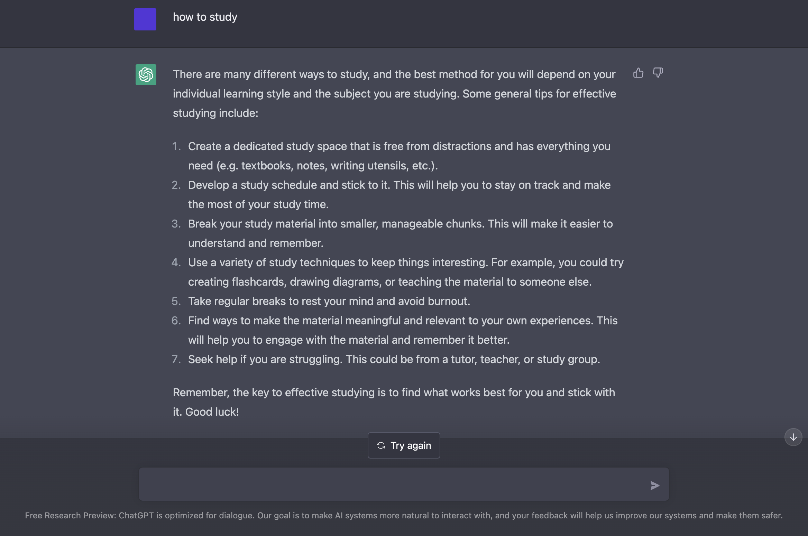

according to chatgpt... this is how to study
Diclaimer: These are ideas I believe work for me, am not sure how it will for you
#1 Remove Distractions!
Setting your phone out of site, behind your computer, under your comforter/pillow, a different room
#2 Set up a Stopwatch!
TIme yourself with completely undistracted work, work for 10minute to 15minutes to 20minutes and keep climbing
Allow yourself to stop once you're feeling you're not being productive anymore
If you're able to power through 8 hours straight without being distracted, then you're a legend & keep doing what you're doing. But if you're someone who easily gets off track, 10 minutes into a study and then you're on your phone, then also good on you too!
Everyone is different and everyone has a different time of how long they can study without being distracted. Even though 10 minutes might seem quick, try staring at a clock for 10 minutes and see quick it is.
Anyways, assuming now you've watched the video, the title means that getting 20 minute quality worth of work can be greater than sitting at a spot - "working" for an hour and having your thoughts be clouded.
It's better to take that break whenever you feel like it's time to break. Instead of pushing yourself and end up with sloppy work. It's better to just take a break then continue once your 5-10 minute break is done. Get up & go walk, find a different spot to work at
let your brain rest and put in good work once your break is finished
To summarize
Warm up your brain and let it know what is happening with easy problems for your first practices/problems
Let your brain ease into and not be put under stress
Reward yourself! Let yourself watch youtube, k-drama, anime, anything to help reward yourself for studying. Personally for me, watching Start-Up motivates me to be productive after I finish an episode.
Another thing is rewarding yourself with more electronics (if you already do work on your computer) can just add more headaches. If you need to, just put down the phone and reward yourself with a stroll around the house or whevever you're at